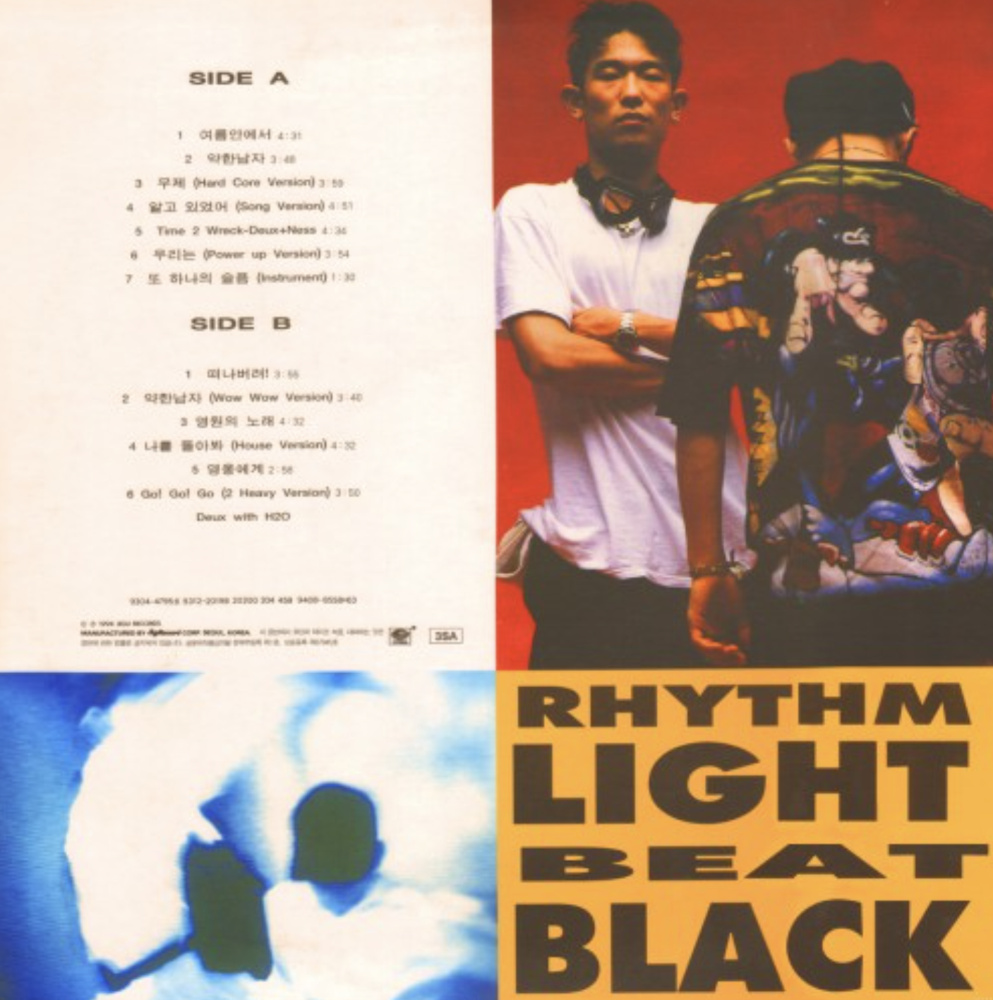
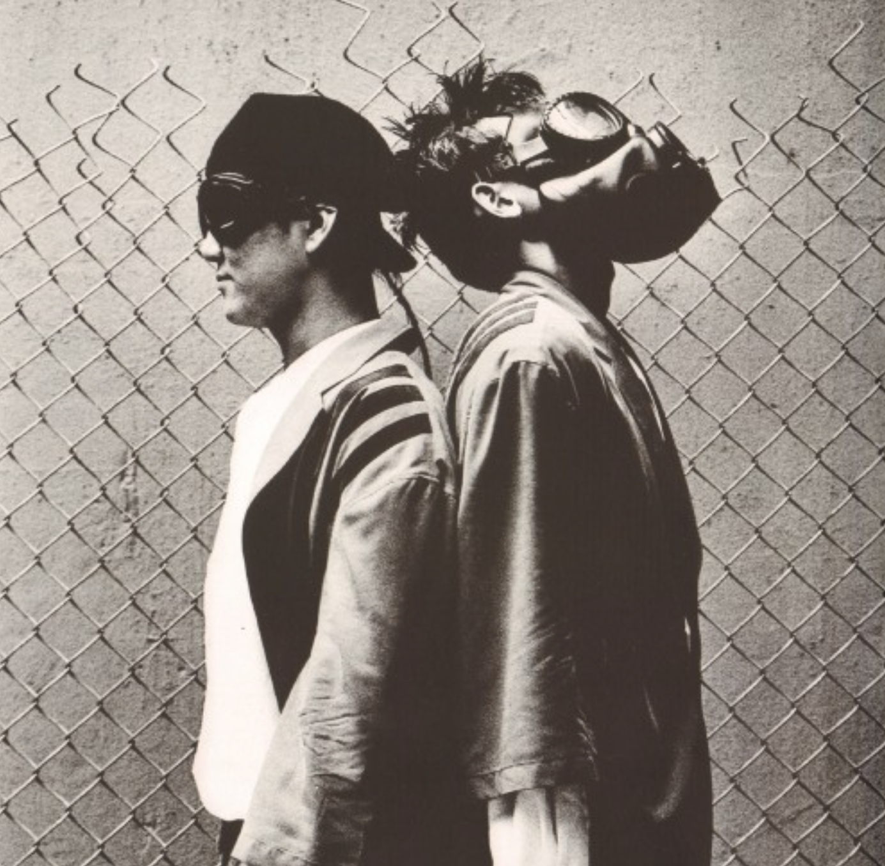
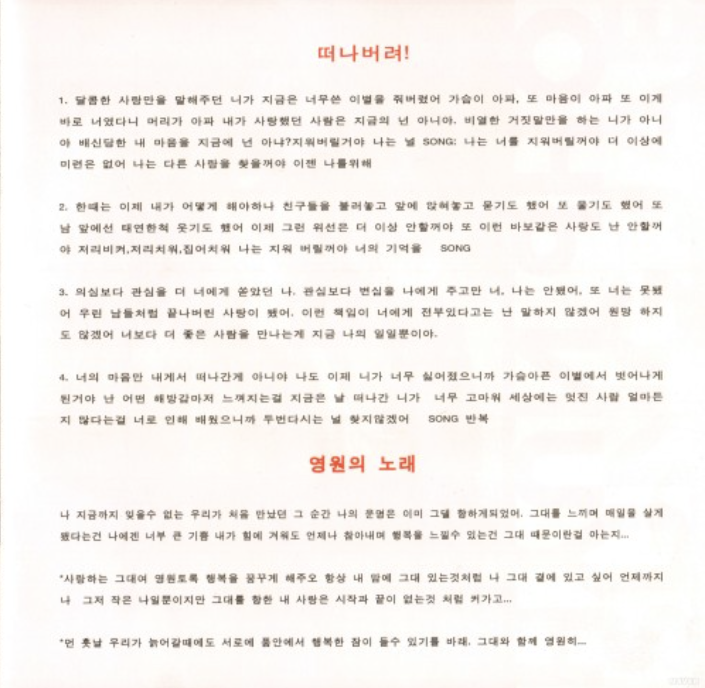
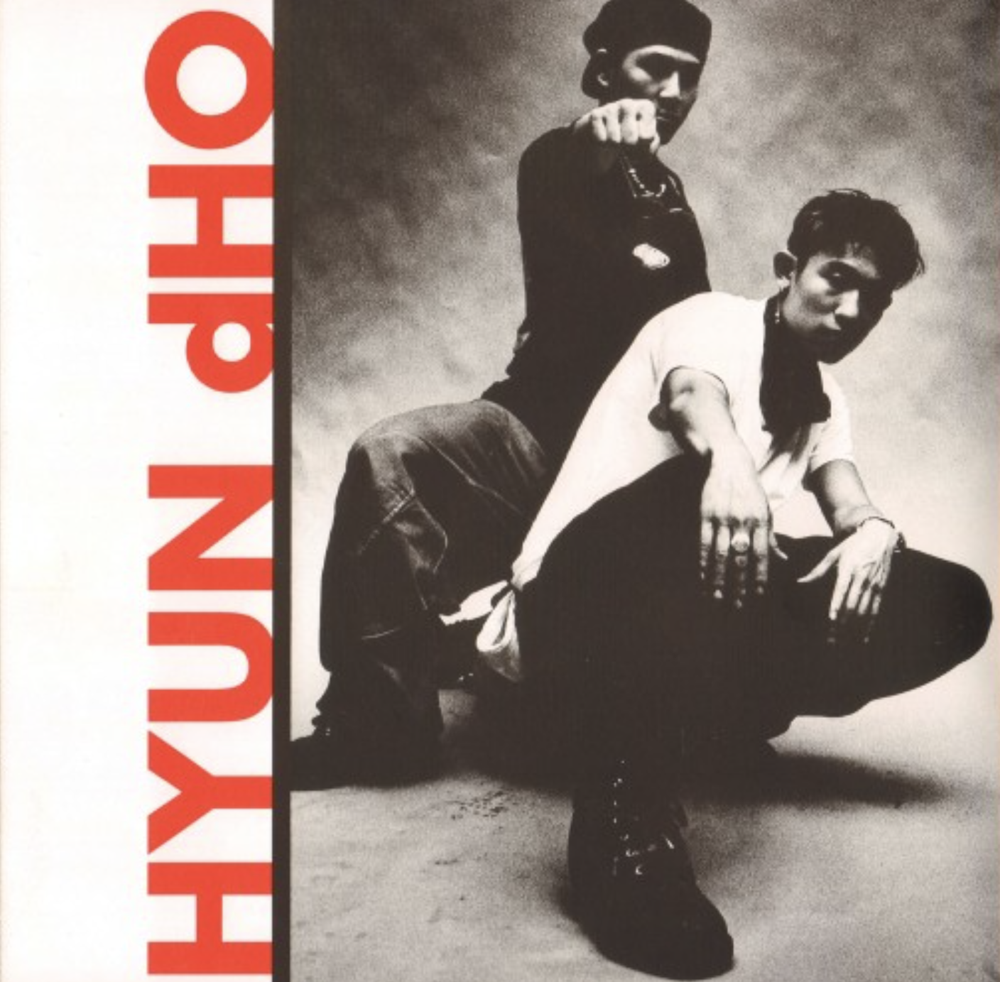
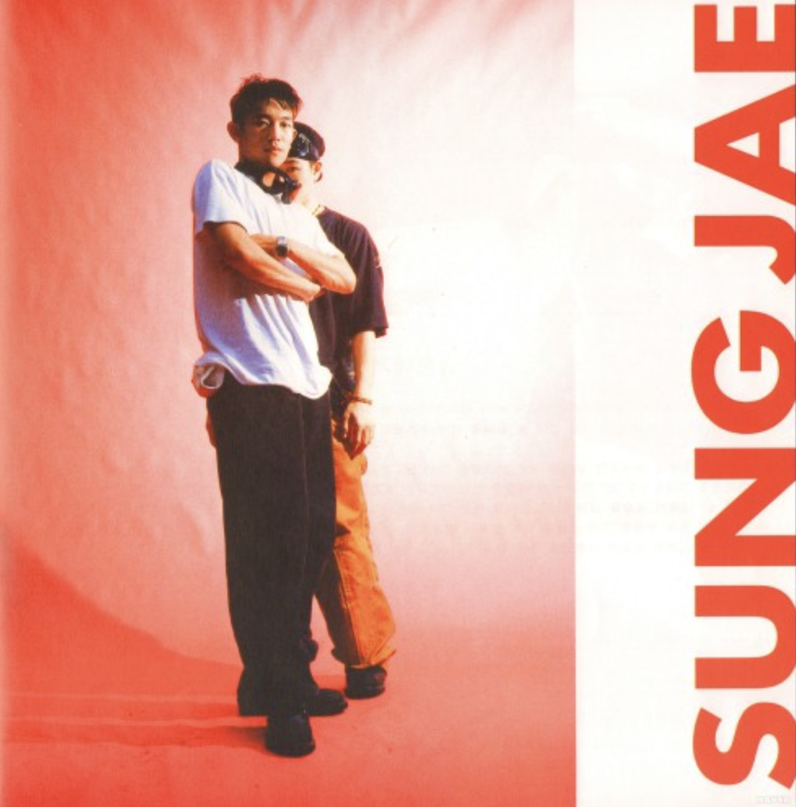

RHYTHM LIGHT BEAT BLACK
<1994>
가수 소개
듀스는 김성재와 이현도로 이루어진 90년대 대표 힙합 듀오로, 현진영과 와와 출신 멤버들이 결성한 그룹이다. 프랑스어로 ‘둘’을 뜻하는 ‘DEUX’에서 이름을 따왔으며, 흰색 의상과 선글라스를 활용한 강렬한 무대 스타일과 세련된 흑인음악 기반의 퍼포먼스로 큰 인기를 얻었다.
앨범소개
RHYTHM LIGHT BEAT BLACK은 듀스가 1994년에 발표한 리믹스 앨범으로, 기존 히트곡들을 세련된 사운드로 재해석하고 신곡을 함께 수록했다. 대표곡 ‘여름안에서’는 지금까지도 사랑받는 여름 시즌 명곡으로 자리 잡았으며, 이현도의 감각적인 프로듀싱과 듀스 특유의 힙합·댄스 스타일이 돋보이는 작품이다.
🎵




